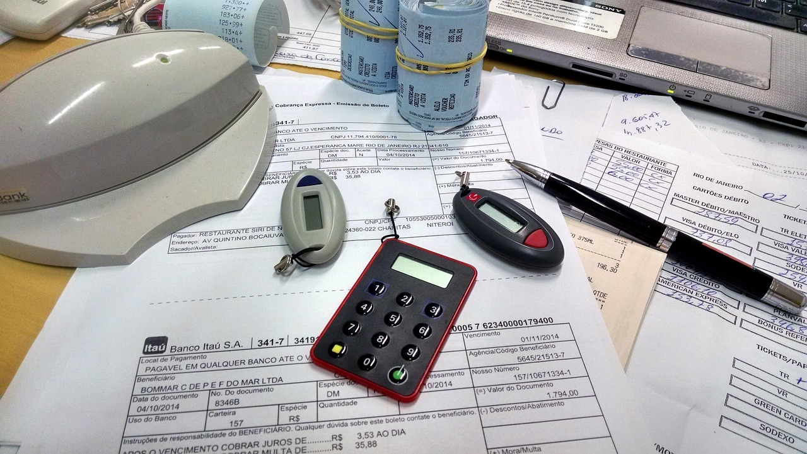

Business Dashboards
Digital Transformation for Every Business
When we hear the term digital transformation, most people think it’s only for big corporates. But what if we could put the pulse of your business at your fingertips? Imagine checking your daily sales, monitoring overdue amounts, and tracking key financial metrics with just a scroll.
Our mission is simple: Business dashboards for all – because every business deserves real-time insights to make smarter decisions.
Why Dashboards Matter?
A well-designed dashboard gives you clarity, control, and confidence. It helps you stay on top of your numbers and act before issues become problems.
There are 6 critical KPIs every business should monitor daily:

Accounts Payable Operating Expenses
Operating Expenses
We design custom dashboards using tools like Power BI, integrated with your ERP or accounting systems, to give you real-time visibility into these KPIs.